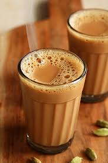

Tea

Simple beverage
Tea is a common beverage popular in all parts of India.
Ingredients
- Tea leaves
- Milk
- Sugar
- Water
Steps
- Pour milk equal to 3/4th the amount of tea you want to make in a saucer.
- Add water equal to the remaining 1/4th.
- Add some sugar as per your preference.
- Add tea leaves as per your preference.
- Let it all boil for a few minutes.